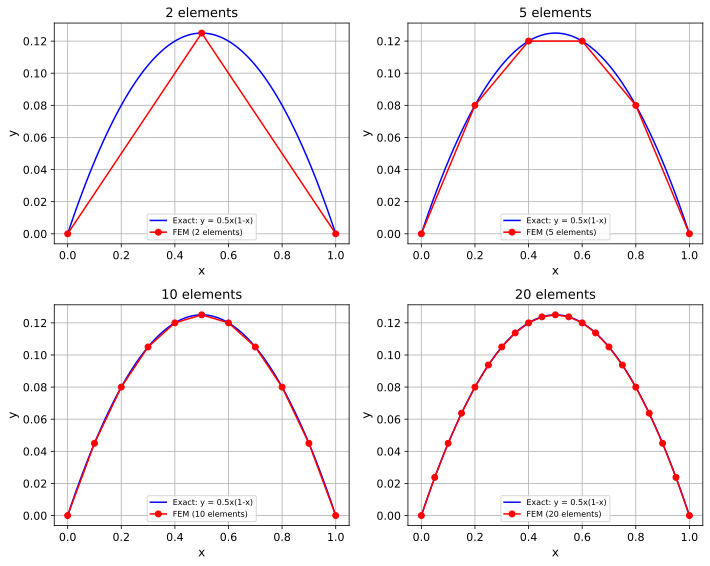

We expand the left-hand side to separate the terms with different derivatives of y. This makes it easier to apply integration by parts to the second-derivative term.
Breaking down the differential operator allows us to handle each term appropriately based on the order of derivatives.
Step 4: Integration by parts for the term with second derivative:
EXPLANATION:
This is the critical step that reduces the order of derivatives in our equation. We apply integration by parts to the term containing the second derivative of y.
The formula for integration by parts is:
∫u·dv = [u·v] - ∫v·du
For our case:
u = v(x)·A(x) and dv = d²y/dx² dx
du = d(v(x)·A(x))/dx dx and v = dy/dx
Using the product rule:
d/dx(v·A·dy/dx) = v·A·d²y/dx² + (v·A)'·dy/dx
Rearranging:
v·A·d²y/dx² = d/dx(v·A·dy/dx) - (v·A)'·dy/dx
This substitution allows us to replace the second derivative with first derivatives, reducing the continuity requirements on our approximation functions.
We choose our test functions v(x) to vanish at the domain boundaries (v(0) = v(L) = 0).
This is a crucial step that eliminates the boundary terms from integration by parts. By carefully selecting test functions that satisfy these conditions, we naturally incorporate the essential (Dirichlet) boundary conditions into our formulation.
This is one of the elegant aspects of the finite element method.
The boundary term [v·A·dy/dx]₀ᴸ vanishes because v(0) = v(L) = 0.
Step 6: Assemble the final weak form:
EXPLANATION: Now we collect all terms to form the complete weak formulation.
This form requires lower continuity requirements on our solution (only first derivatives appear).
The weak form is equivalent to the strong form for sufficiently smooth solutions, but it allows us to find approximate solutions with less smoothness.
This is the foundation for the finite element approximation where we'll represent the solution as a combination of piecewise polynomial functions.
Step 8: Express solution and test functions using shape functions:
EXPLANATION:
We approximate both the solution y(x) and test function v(x) using the same set of shape functions.
The solution is written as a sum of shape functions with unknown coefficients a_j. Similarly, the test function is written as a sum with coefficients b_i.
This is the Galerkin approach, where we use the same functions for both approximation and testing.
NOTE: In practice, the assembly process is typically done by looping over elements,computing the element contributions, and adding them to the global system.
This element-by-element approach is more efficient and aligns with the local support property of shape functions.
We expand the left-hand side to separate the terms with different derivatives of y. This makes it easier to apply integration by parts to the second-derivative term.
Breaking down the differential operator allows us to handle each term appropriately based on the order of derivatives.
Step 4: Integration by parts for the term with second derivative:
EXPLANATION:
This is the critical step that reduces the order of derivatives in our equation. We apply integration by parts to the term containing the second derivative of y.
The formula for integration by parts is:
∫u·dv = [u·v] - ∫v·du
For our case:
u = v(x)·A(x) and dv = d²y/dx² dx
du = d(v(x)·A(x))/dx dx and v = dy/dx
Using the product rule:
d/dx(v·A·dy/dx) = v·A·d²y/dx² + (v·A)'·dy/dx
Rearranging:
v·A·d²y/dx² = d/dx(v·A·dy/dx) - (v·A)'·dy/dx
This substitution allows us to replace the second derivative with first derivatives, reducing the continuity requirements on our approximation functions.
We choose our test functions v(x) to vanish at the domain boundaries (v(0) = v(L) = 0).
This is a crucial step that eliminates the boundary terms from integration by parts. By carefully selecting test functions that satisfy these conditions, we naturally incorporate the essential (Dirichlet) boundary conditions into our formulation.
This is one of the elegant aspects of the finite element method.
The boundary term [v·A·dy/dx]₀ᴸ vanishes because v(0) = v(L) = 0.
Step 6: Assemble the final weak form:
EXPLANATION: Now we collect all terms to form the complete weak formulation.
This form requires lower continuity requirements on our solution (only first derivatives appear).
The weak form is equivalent to the strong form for sufficiently smooth solutions, but it allows us to find approximate solutions with less smoothness.
This is the foundation for the finite element approximation where we'll represent the solution as a combination of piecewise polynomial functions.
Step 8: Express solution and test functions using shape functions:
EXPLANATION:
We approximate both the solution y(x) and test function v(x) using the same set of shape functions.
The solution is written as a sum of shape functions with unknown coefficients a_j. Similarly, the test function is written as a sum with coefficients b_i.
This is the Galerkin approach, where we use the same functions for both approximation and testing.
NOTE: In practice, the assembly process is typically done by looping over elements,computing the element contributions, and adding them to the global system.
This element-by-element approach is more efficient and aligns with the local support property of shape functions.
The final step would be solving the linear system:
\(\displaystyle \text{True}\)
After solving for the unknown coefficients a_j, we can reconstruct the solution y(x)
2.7 Example: Convergence with Mesh Refinement
The following plots show the FEM solution for increasing numbers of elements, demonstrating how the numerical solution converges to the exact solution as the mesh is refined.
Code
import matplotlib.pyplot as pltfig, axes = plt.subplots(2, 2, figsize=(10, 8))x_exact = np.linspace(0, 1, 100)y_exact =0.5* x_exact * (1- x_exact)for idx, n_elem inenumerate([2, 5, 10, 20]): ax = axes[idx //2, idx %2]# --- Compute FEM solution --- n_nodes = n_elem +1 h =1.0/ n_elem K = np.zeros((n_nodes, n_nodes)) F_vec = np.zeros(n_nodes)for e inrange(n_elem): k_e = np.array([[1, -1], [-1, 1]]) / h f_e = np.array([h /2, h /2]) K[e:e+2, e:e+2] += k_e F_vec[e:e+2] += f_e a = np.linalg.solve(K[1:-1, 1:-1], F_vec[1:-1]) y_fem = np.zeros(n_nodes) y_fem[1:-1] = a x_fem = np.linspace(0, 1, n_nodes)# --- Plot on the subplot --- ax.plot(x_exact, y_exact, 'b-', label='Exact: y = 0.5x(1-x)') ax.plot(x_fem, y_fem, 'ro-', label=f'FEM ({n_elem} elements)') ax.set_title(f'{n_elem} elements') ax.set_xlabel('x') ax.set_ylabel('y') ax.grid(True) ax.legend(fontsize=8)plt.tight_layout()plt.show()

FEM solution with varying mesh refinement
Source Code
---title: "Introduction and 1D Setup"---## Setup```{python}#| include: false%run _common.pyimport python.L1 as femimport python.L1a as fem_viz```## The Strong Form```{python}#| code-fold: true#| echo: fencedfem.display_strong_form()```## Deriving the Weak Form```{python}#| code-fold: true#| echo: fencedweak_eq = fem.derive_weak_form()```## Shape Functions for Discretization```{python}#| code-fold: true#| echo: fencedN =5phi, a, b, y_approx, v_approx = fem.define_shape_functions(N)```## Assembling the FEM System```{python}#| code-fold: true#| echo: fencedK, F_vec = fem.assemble_fem_system(weak_eq, phi, a, b, y_approx, v_approx, N)```## Putting It All Together```{python}#| code-fold: true#| echo: fencedfem.finite_element_method_1d_demo()```## Example: Convergence with Mesh Refinement {#sec-convergence-example}The following plots show the FEM solution for increasing numbers of elements, demonstrating how the numerical solution converges to the exact solution as the mesh is refined.```{python}#| code-fold: true#| echo: true#| fig-cap: "FEM solution with varying mesh refinement"#| output: trueimport matplotlib.pyplot as pltfig, axes = plt.subplots(2, 2, figsize=(10, 8))x_exact = np.linspace(0, 1, 100)y_exact =0.5* x_exact * (1- x_exact)for idx, n_elem inenumerate([2, 5, 10, 20]): ax = axes[idx //2, idx %2]# --- Compute FEM solution --- n_nodes = n_elem +1 h =1.0/ n_elem K = np.zeros((n_nodes, n_nodes)) F_vec = np.zeros(n_nodes)for e inrange(n_elem): k_e = np.array([[1, -1], [-1, 1]]) / h f_e = np.array([h /2, h /2]) K[e:e+2, e:e+2] += k_e F_vec[e:e+2] += f_e a = np.linalg.solve(K[1:-1, 1:-1], F_vec[1:-1]) y_fem = np.zeros(n_nodes) y_fem[1:-1] = a x_fem = np.linspace(0, 1, n_nodes)# --- Plot on the subplot --- ax.plot(x_exact, y_exact, 'b-', label='Exact: y = 0.5x(1-x)') ax.plot(x_fem, y_fem, 'ro-', label=f'FEM ({n_elem} elements)') ax.set_title(f'{n_elem} elements') ax.set_xlabel('x') ax.set_ylabel('y') ax.grid(True) ax.legend(fontsize=8)plt.tight_layout()plt.show()```